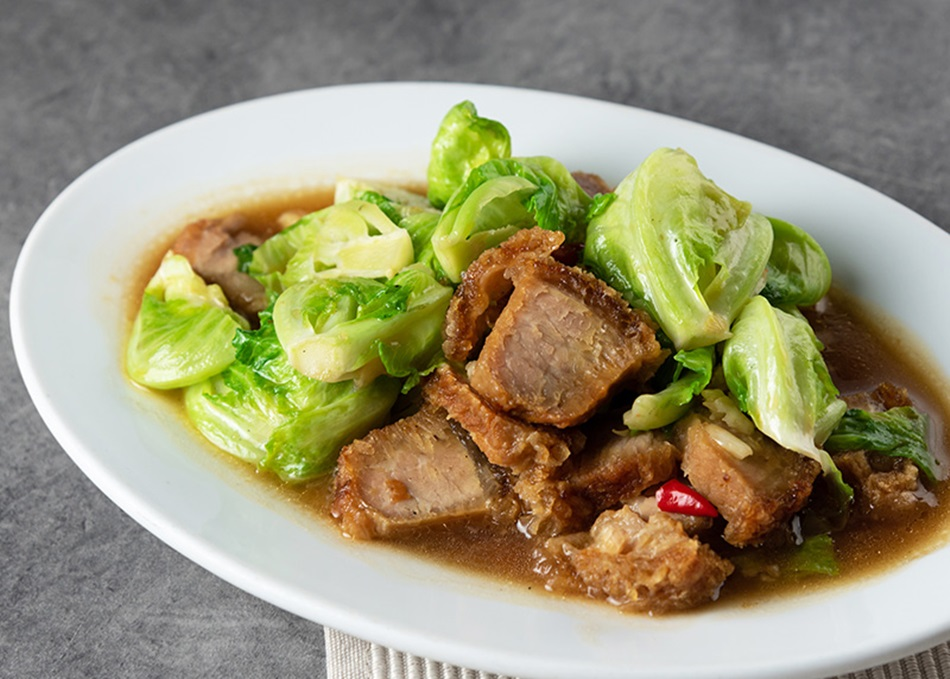

ประโยชน์ของผัดแขนง
- แขนงมีวิตามินและแร่ธาตุสูง ช่วยเสริมสร้างภูมิคุ้มกัน
- มีใยอาหารสูง ช่วยระบบขับถ่าย
- มีสารต้านอนุมูลอิสระ ช่วยลดความเสี่ยงโรคมะเร็ง
- มีแคลเซียมสูง ช่วยบำรุงกระดูกและฟัน
- มีธาตุเหล็ก ช่วยบำรุงเลือด
ส่วนประกอบ
- แขนง (หั่นเป็นท่อน) 300 กรัม
- เนื้อสัตว์ (หมู, ไก่, หรือเนื้อ) 150 กรัม
- กระเทียมสับ 1 ช้อนโต๊ะ
- พริกขี้หนูสับ (ตามชอบ)
- น้ำมันหอย 2 ช้อนโต๊ะ
- ซีอิ๊วขาว 1 ช้อนโต๊ะ
- น้ำตาลทราย 1 ช้อนชา
- น้ำมันพืช 1 ช้อนโต๊ะ
ประโยชน์ที่จะรับ
| ส่วนประกอบ |
พลังงาน (kcal) |
โปรตีน (g) |
ไขมัน (g) |
คาร์โบไฮเดรต (g) |
| แขนง (300 กรัม) |
90 |
8 |
1 |
16 |
| เนื้อสัตว์ (150 กรัม) |
250 |
30 |
12 |
0 |
| กระเทียมสับ (1 ช้อนโต๊ะ) |
15 |
0.5 |
0.1 |
3 |
| พริกขี้หนูสับ (ตามชอบ) |
10 |
0.3 |
0.1 |
2 |
| น้ำมันหอย (2 ช้อนโต๊ะ) |
30 |
1 |
2 |
4 |
| ซีอิ๊วขาว (1 ช้อนโต๊ะ) |
10 |
1 |
0 |
1 |
| น้ำตาลทราย (1 ช้อนชา) |
15 |
0 |
0 |
4 |
| น้ำมันพืช (1 ช้อนโต๊ะ) |
40 |
0 |
4.5 |
0 |
| รวม |
460 kcal |
40.8 g |
19.7 g |
30 g |
วิธีการทำ
- เตรียมวัตถุดิบ: ล้างแขนง หั่นเป็นท่อนพอดีคำ หั่นเนื้อสัตว์เป็นชิ้นพอดีคำ สับกระเทียมและพริกขี้หนู
- ตั้งกระทะให้ร้อน ใส่น้ำมันพืชลงไปเล็กน้อย
- ใส่กระเทียมและพริกขี้หนูสับลงไปผัดให้หอม
- ใส่เนื้อสัตว์ลงไปผัดให้สุก
- ใส่แขนงลงไปผัดให้เข้ากัน
- ปรุงรสด้วยน้ำมันหอย ซีอิ๊วขาว และน้ำตาลทราย
- ผัดให้เข้ากัน ชิมรสตามชอบ
- ตักเสิร์ฟพร้อมข้าวสวยร้อน ๆ